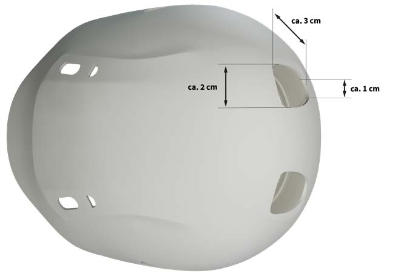

Vor der Auswahl und der Benutzung von Kopfschutz hat der Unternehmer bzw. die Unternehmerin nach § 5 Arbeitsschutzgesetz eine Gefährdungsbeurteilung durchzuführen. Dabei sind Art, Umfang und mögliche Auswirkungen der Gefährdungen für die Versicherten, die durch technische oder organisatorische Maßnahmen nicht verhindert oder ausreichend verringert werden können, zu ermitteln und deren Risiko zu bewerten.
Die Benutzung von Kopfschutz, der die Anforderungen einer europäischen Norm erfüllt, kann die Schwere einer Kopfverletzung reduzieren. Dennoch können Verletzungen eintreten, selbst wenn die einwirkenden Kräfte auf den Kopfschutz nicht größer sind als die in den Prüfungen angesetzten Kräfte. Einwirkungen mit noch größeren Kräften können schwere oder tödliche Verletzungen verursachen. Kopfschutz bietet somit lediglich einen eingeschränkten Schutz, der entsprechend detailliert beurteilt werden sollte.
Der Unternehmer bzw. die Unternehmerin sollten sicherstellen, dass die Gefährdungen, die sich aus den auszuführenden Tätigkeiten und den verschiedenen Einsatzbedingungen ergeben, genau ermittelt und bewertet werden. Die Ergebnisse der Gefährdungsbeurteilung sind nach § 6 (ArbSchG) zu dokumentieren. Bei Veränderungen der Arbeitsplatzbedingungen sind die Ergebnisse der Gefährdungsbeurteilung gemäß § 3 Arbeitsschutzgesetz zu überprüfen. Um eine vollständige Gefährdungsbeurteilung durchführen zu können, müssen die möglichen Gefährdungen bekannt sein.
Die folgende Aufzählung von Gefährdungen, die zu Kopfverletzungen führen können, soll bei der Durchführung der Gefährdungsbeurteilung als Hilfestellung dienen. Sie berücksichtigt in erster Linie Gefährdungen, die bei Tätigkeiten in industriellen Bereichen auftreten können. Die Aufzählung ist nicht abschließend und Gefährdungen, die beim Fahrradfahren und beim Bergsteigen vorliegen können, wurden nicht erfasst.
Im Rahmen der Tätigkeiten können unterschiedliche Bereiche des Kopfes gefährdet werden. So können neben dem Scheitelbereich, auch seitliche Bereiche, wie Ohren oder Schläfen, sowie der Hinterkopf im Übergang zum Nacken und die Stirn betroffen sein. Die gefährdeten Bereiche des Kopfes müssen daher bei der Auswahl der Form des Helms Berücksichtigung finden. So empfiehlt sich bei Fahrradhelmen für den Stadtverkehr eine Helmschale, die weit in den Nacken reicht und auch die Schläfenbereiche abdeckt.
Für eine genaue Bewertung der Gefährdung "von herabfallenden Gegenständen getroffen werden" muss beispielsweise ermittelt werden, welche Gegenstände herabfallen können.
Dabei spielt die größtmöglich auftretende Energie, die durch die Masse und die Fallhöhe eines herabfallenden Gegenstands festgelegt wird, die entscheidende Rolle. Die daraus resultierende Energie sollte die zulässige Energieaufnahme des Kopfschutzes nicht überschreiten. Im Bereich der Industrieschutzhelme gibt es durch die zusätzliche Norm für Hochleistungs-Industrieschutzhelme zwei Leistungsbereiche. Im Scheitelbereich wird die Stoßdämpfungsprüfung bei Industrieschutzhelmen mit einer Energie von circa 49 Joule, bei Hochleistungs-Industrieschutzhelmen mit circa 98 Joule durchgeführt. Um diese Angaben auf die Fallhöhe bzw. auf das Gewicht eines herabfallenden Gegenstandes umrechnen zu können, ist die Formel für die potenzielle Energie anzuwenden:
Energie [Joule] = Höhe [m] * Masse [kg] * Erdbeschleunigung [m/s²]
Prüfenergie für Industrieschutzhelme = 1 m * 5 kg * 9,81 m/s² = 49,05 Joule
Mit der Formel kann überprüft werden, ob die Energie eines herabfallenden Gegenstands noch innerhalb der Normanforderung oder darüber liegt. Der Hochleistungs-Industrieschutzhelm wird im Gegensatz zum Industrieschutzhelm bei der Stoßdämpfungsprüfung im Bereich des Scheitels mit etwa der doppelten Energie geprüft. Das bedeutet für den Einsatz eines Hochleistungs-Industrieschutzhelms, dass ein Gegenstand doppelt so schwer oder die Fallhöhe doppelt so groß sein darf, als beim Industrieschutzhelm. Ein 0,5 kg schwerer Gegenstand dürfte im Falle eines Industrieschutzhelms aus einer Höhe von ca. 10 m, im Falle eines Hochleistungs-Industrieschutzhelms aus ca. 20 m herunterfallen, um der Prüfenergie aus der Norm gerade noch zu entsprechen.
Einige Hersteller schätzen die Belüftung als sehr wichtigen Punkt für den Tragekomfort und somit für die Tragebereitschaft ein und bieten aufgrund dieser Tatsache Helme mit großen Lüftungsöffnungen an. Bei Industrieschutzhelmen darf die Gesamtfläche der Lüftungsöffnungen normbedingt nicht größer als 450 mm² sein. Dabei ist es zulässig, die Lüftungsöffnungen mit einer netz- bzw. gitterartigen Einlage aus Gewebe oder dünnem Metall zu versehen. Die eingesetzten Gewebe- oder Metalleinlagen reduzieren die gesamte Lüftungsöffnungsfläche um den Betrag der Fläche der Einlage und schützen vor dem Eindringen kleiner Partikel, wie Staub und Schmutz.
Da die Prüfung der Durchdringung der Helmschale von Industrieschutzhelmen in der jetzigen Norm nur innerhalb eines Kreises mit dem Radius von 50 mm im Zentrum des Helmscheitels erfolgt, müssen diese Einlagen im Bereich der außerhalb des Prüfbereichs liegenden Öffnungen keine Anforderungen an die Festigkeit erfüllen – sie sind nicht prüfungsrelevant.
Schutzhelme mit großen Lüftungsöffnungen, wie sie momentan auf dem Markt erhältlich sind, können in Einsatzbereichen der Industrie die Gefahr bergen, dass kleine bzw. schmale Gegenstände durch die Öffnungen fallen bzw. geschleudert werden und schwere Verletzungen verursachen können. Selbst Lüftungsöffnungen mit Einlagen können eine Durchdringung nicht ausschließen, da die Einlagen nicht über die gleiche Festigkeit wie die Helmschale verfügen. Beispielsweise treten bei der Ausführung unterschiedlicher Tätigkeiten in der Bauwirtschaft eine Vielzahl von Situationen auf, bei denen kleine Gegenstände aus großen Höhen herabfallen und Personen treffen können. Werkzeuge, Material oder Reste davon können von hochgelegenen Arbeitsplätzen und Verkehrswegen, beispielsweise von Gerüsten, herabfallen. Trifft ein kleiner Gegenstand auf eine große Lüftungsöffnung mit dünner Gewebe- bzw. Metalleinlage, kann es zu einer Durchdringung und in der Folge zu einer schweren Kopfverletzung kommen.

Abb. 16 Industrieschutzhelm mit sehr großen Lüftungsöffnungen
Sollen Arbeiten unter Spannung oder unter Spannung stehender Teile einer Anlage durchgeführt werden, ist vor Aufnahme der Tätigkeiten zu überprüfen, ob die elektrische Klasse des Helms für die zu erwartende Nennspannung der elektrischen Anlage ausreichend ist.